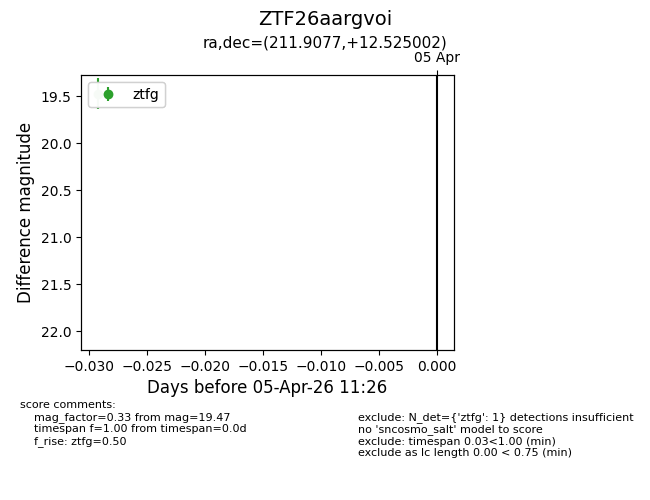
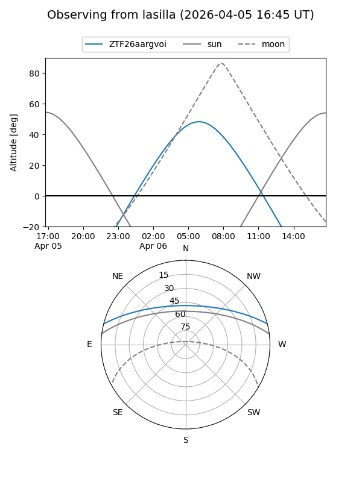
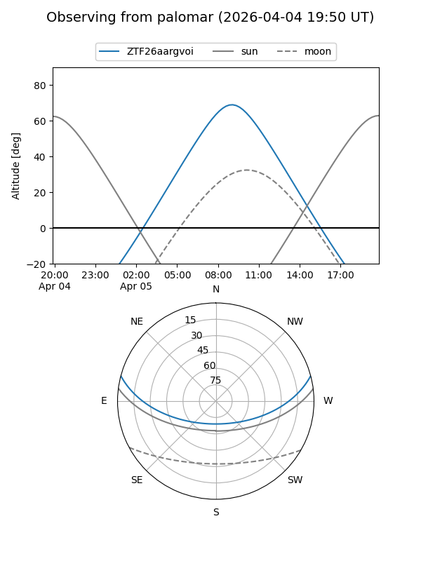

ZTF26aargvoi
Target ZTF26aargvoi at 2026-04-05 11:29
Aliases and brokers:
FINK: link
Lasair: link
ALeRCE: link
alt names
ZTF26aargvoi (ztf,fink_ztf)
Coordinates:
equatorial (ra, dec) = 211.9077,+12.52500
equatorial (HMS+DMS) = 14:07:37.84,+12:31:30.01
galactic (l, b) = (357.3726,+66.94404)
Flags:
Photometry:
last ztfg=19.47
1 ztfg detections
Lightcurve

Visibility


Additional plots